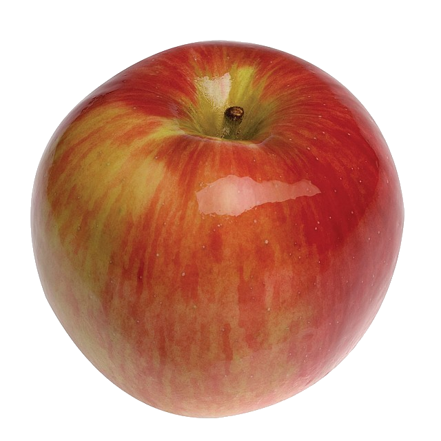

Джонатан
Джонатан — десертний осінній сорт яблуні домашньої американської селекції, отриманий від посіву насіння сорту Езоп Спіценбург. Є одним з основних сортів світового сортименту. Виділяється тим, що плоди зберігаються аж до квітня-травня.
Дерево середньо-росле, крона округла, розлога. Плоди середні і великі (140—165 г), округло-конічної форми з невеликими ребрами, що проходять через весь плід, зеленувато-жовтого кольору, з великим смугастим рум'янцем темно-червоного кольору.
<М'якоть зеленувато-білого кольору, при дозріванні — кремова, солодко-кисла, з приємним ароматом, соковита, щільна, відмінного десертного смаку. Урожайність висока, сорт скороплідний. Час дозрівання: вересень — жовтень.
Перевагою сорту є висока врожайність, чудові смакові якості плодів і добра їхня лежкість у холодильнику. Недолік — слабка зимостійкість і погана стійкість до попелюхи. (за іншими даними — досить висока морозостійкість). Перший урожай: на 3-й рік після посадки.